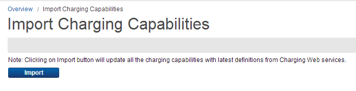

Import Charging CapabilitiesCharging capabilities are comprised of entities and functions exposed and supported by the charging component. They are required by Ericsson Catalog Manager (ECM) for certain configurations, such as for the construction of rating rules as defined in a rating matrix. ECM provides a functionality to update all the charging capabilities with latest definitions from charging Web services. To update the charging capabilities, follow these steps:
 Note: If a charging Web service is not available, clicking the Import button displays a message that End System is not available. |